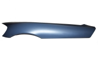
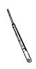
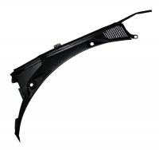

USED 2003 - 2010 Dodge Viper SRT10 RIGHT Fender
Part # 5029103AF
$1,750.00
Price as of 2026-06-06 archive
Available when archived
Contact to orderor email info@PartsRack.com · 360.837.3937
| Part number | 5029103AF |
|---|---|
| Mopar part # | 05029103AF |
| Fits years | 2003-2010 |
| Models | Viper, SRT10 |
| Condition | Used |
| Category | Windshield Wiper / Washer |
Description
DEEP DISCOUNT --- USED
2003 - 2010 Dodge Viper SRT10 Left Front Fender
USED -- Repair and Painting required
Mopar Part # 05029103AF
Ships immediately
Archived 2024-11-05 · view original capture
More in Windshield Wiper / Washer

2003-2010 Dodge Viper Front Wiper Arm and Blade Right Side
Part # 04865506AB
$132.00

2003 - 2010 Dodge Viper SRT10 Wiper Blade Set PAIR - 04865506AB 04865507AB
Part # 4865506AB / 4865507AB
$334.00

Out of stock2003 - 2010 Dodge Viper SRT10 Left Windshield Cowl - 0UC23RXFAC
Part # 0UC23RXFAC
$249.00

2003 - 2010 Dodge Viper SRT10 Windshield Washer Reservoir, Cap, & Hose - 5029173AA 4630249 4865497AA
Part # 5029173AA - 4630249 - 4865497AA
$75.00